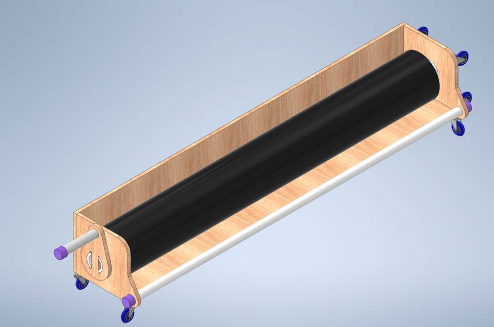
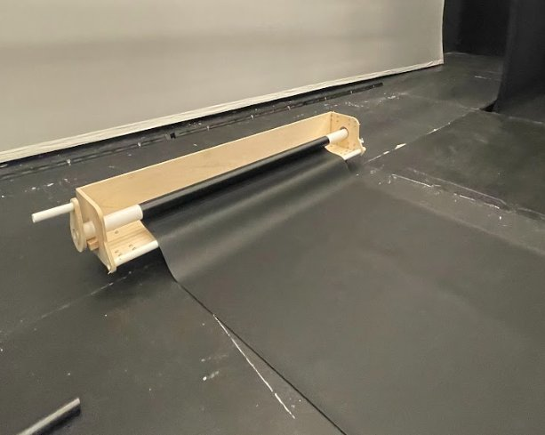
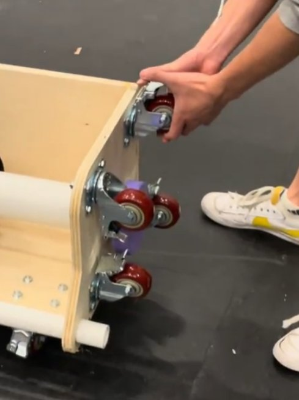

07 — Mechanical Design · Independent Project
A purpose-built mechanical device for rolling and storing Marley dance floor — a practical design problem solved with a plywood frame, PVC pipe roller, crank mechanism, and locking caster wheel system.
Objective
Marley flooring — the standard black vinyl surface used in professional dance and performance spaces — is heavy, wide, and difficult to handle. Rolling it by hand typically requires multiple people and produces an uneven roll that is hard to store and damages the material over time.
The goal was a single-person operable device that rolls the Marley consistently and tightly, stores compactly in a vertical position, and can be moved freely around the stage space without lifting.
Design
The device is built around a plywood structural frame spanning the full width of the Marley floor. A Schedule 40 PVC pipe serves as the rolling mandrel — light enough to handle but stiff enough to maintain a consistent roll diameter. A crank mechanism on one end allows a single operator to wind the floor without bending or gripping the tube directly.
Four locking swivel casters allow the device to be pushed across the stage in any direction, then locked in place during rolling to prevent drift. The low profile of the caster mount allows the leading edge of the Marley to feed cleanly onto the PVC roller from the floor.

SolidWorks isometric CAD — frame, PVC roller, crank, and caster assembly
Physical Build
The device was fabricated and tested in the actual performance space it was designed for. During deployment testing, the roller successfully wound the full width of Marley floor to a tight, even roll — a significant improvement over manual handling. Caster selection proved to be the most consequential component decision: swivel locking casters allow free positioning during setup and solid locking during operation, which is critical for consistent roll quality.


Roller deployed in the performance space, actively winding the Marley floor (left) · locking swivel casters — free movement and secure locking during operation (right)
Watch DemoReflection
The most effective engineering solutions often emerge from unglamorous problems. Rolling a dance floor is not a high-stakes design challenge — but it is a real one, and solving it well required careful attention to ergonomics, kinematics, and material selection.
Caster selection determined more about usability than any other component. Swivel locking casters allow free positioning during setup and solid locking during operation — this combination was critical for producing a consistent, tight roll without the device drifting.
Testing in the actual environment revealed a front loading profile issue — the caster mount height needed a small adjustment to allow the Marley to feed cleanly onto the roller from the floor without the leading edge catching. Real-environment testing catches things CAD does not.